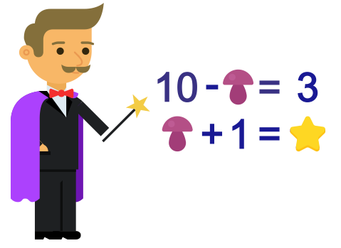

Задача «Арифметичний ребус»

У математичних ребусах за однаковими картинками ховаються однакові цифри, за різними – різні.
Яку цифру фокусник перетворив на зірку?
У математичних ребусах за однаковими картинками ховаються однакові цифри, за різними – різні.
Яку цифру фокусник перетворив на зірку?

Вибери зайвий головний убір: берет, шапка, каска, капелюх.

Кожен монстрик вранці з'їдає два йогурту. Щоб нагодувати цих чотирьох, не вистачило 1 йогурту.
Скільки йогуртів було?

Що ховається за знаком питання?